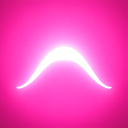

Ceremony Playlist BuilderNew playlists for ceremonies and retreats, built from the ones you already have. Requires Spotify Premium.
Part of this page did not start. Try reloading it with Command-Shift-R on a Mac, or Ctrl-F5 on Windows. If this message stays, report this problem.
More about this app
What it does
Ceremony Playlist Builder makes long playlists from your existing Spotify playlists. Describe the structure of the playlists you want to create, and the app builds as many complete playlists as your music allows, with songs picked at random and no song repeated across the playlists made from one format. Each playlist is created in your Spotify account, ready to play.
What it's good for
Ceremonies, retreats, workshops, and any long event where the music should follow an arc, such as arriving, deepening, and landing. Instead of steering a shuffle during the event or manually building a playlist ahead of time for each event, set the structure once and get multiple fresh, non-overlapping playlists. You can then use these playlists for subsequent events without ever repeating the same music.
How it works
- Connect Spotify through a free developer app. This takes a few minutes to set up, but you’ll only need to do it once.
- Define your format(s): which of your playlists to draw from, in what order, and for how long.
- Build the playlists. The app shows you what it found and asks before it builds anything.
What you need
A Spotify Premium account (Spotify requires it for the free developer app) and some playlists of your own to draw from.
Reporting problems
If you run into a problem you can report it in the More options section at the bottom of this page.
Privacy
Your existing Spotify playlists are only read, never changed. Everything runs in this browser, and nothing about your music, such as playlist names or songs, goes anywhere except to you and Spotify. For the full details, see Privacy at the bottom of this page.
1. Connect to Spotify
Welcome back. Your Spotify developer app is saved in this browser. Connect to Spotify to continue.
Something unexpected happened. Report this problem
Spotify developer app setup
This page connects to Spotify through a free Spotify developer app that belongs to you. Use a developer app made just for Ceremony Playlist Builder. If you have a developer app from another project, leave it alone and create a new one. Pick the option that fits:
- Open the Spotify developer dashboard (it opens in a new tab), log in with your Spotify Premium account, and click Create app.
-
Fill in the form:
- App name: type
Ceremony Playlist Builder - App description: type anything. Spotify requires something here, for example Playlist builder.
- Website: leave it blank, if you see this box.
-
Redirect URI: copy this address, paste it in exactly as shown, then click Add:
- Which API/SDKs are you planning to use? Check Web API only. Leave the other boxes unchecked.
- Check the box agreeing to Spotify's terms, then click Save.
- App name: type
- Copy the Client ID shown on your new app's page.
- Open the Spotify developer dashboard (it opens in a new tab), log in, and click the developer app created for Ceremony Playlist Builder.
- Copy the Client ID shown on its page.
Paste your Client ID here, then connect:
Spotify says "Invalid redirect URI"?
This address is not registered with your app yet. In your app's Settings, paste it under Redirect URIs, click Add, then scroll down and click Save. Then try Connect again.
Your Client ID is not a secret. It stays in this browser, and goes only to Spotify. For everything else the page sends, see Privacy at the bottom of this page.
1. Connect to Spotify
Connecting...
1. Connect to Spotify
Something unexpected happened. Report this problem
2. Edit your formats
Your formats are saved in this browser. You back them up to this device yourself: , and at any time.
Your formats are saved in this browser, and backed up to Spotify automatically, each in a private playlist ending in (format backup).
How should your formats be backed up?
Your formats are saved in this browser. Clearing the browser's data, on purpose or by accident, erases them, so it is a good idea to keep a second copy. You have two options for that:
Each format is kept in a private playlist of its own, named like the format and ending in (format backup). The format is saved in that playlist's description, so please do not edit it.
You back up to this device when you ask for it, and restore from that backup when you need it.
How formats work
A format is a recipe for one kind of playlist: which of your playlists to draw from, in what order, and for how long. The app makes as many playlists from a format as your songs allow, and no song repeats between them.
Segments
Each row is one stretch of music. Tap the playlist to choose it, and use the minus and plus buttons to set how many minutes it fills. Drag the dotted handle to change the order. Each segment typically lands within about 30 seconds of its target. Point at a row, or tap a piece of the bar at the top, to see which belongs to which. Add another with New segment.
Silence
The small tags hanging off the right side of the rows are silences. A silence adds time on top of your segment minutes, and can be used for effect or simply to tell a facilitator the music has moved into a new segment. To put the same silence between every two segments, set the length at the bottom of the format, beside Duplicate and Delete. Tap a tag to change that one silence. A tag with a changed length is pink, and Reset to default puts it back. To add a silence where there is none, use a segment's three dots.
Mixes
To blend two playlists in one segment, tap the three dots on that row and choose Add a mix. Pick the second playlist, then use the slider to set how much of each. In the bar at the top, a mixed segment shows as diagonal stripes in two shades of the accent color.
A format has a size limit, so that it always fits in a backup. When a format is full, New segment and Add a mix are greyed out, and a change that would make it longer is not made, until something is removed.
Names
The name of a format is also the name of the playlists it makes: a format called "Warm focus" makes "Warm focus 1", "Warm focus 2", and so on. Give every format a different name. When you build playlists again, this app treats playlists that match a format's name as its own and offers to replace them.
3. Build playlists
Builds playlists for the selected format. You can see the plan first, and nothing is built until you confirm.
Building playlists needs a working connection to Spotify. See Step 1.
4. Back up manually to this device (optional)
Your formats are saved only in this browser. Clearing your browser data would erase them. A manual backup keeps a copy on this device so you can restore them if needed.
This app is freely available to everyone. If it’s been useful to you, please donate whatever feels right.